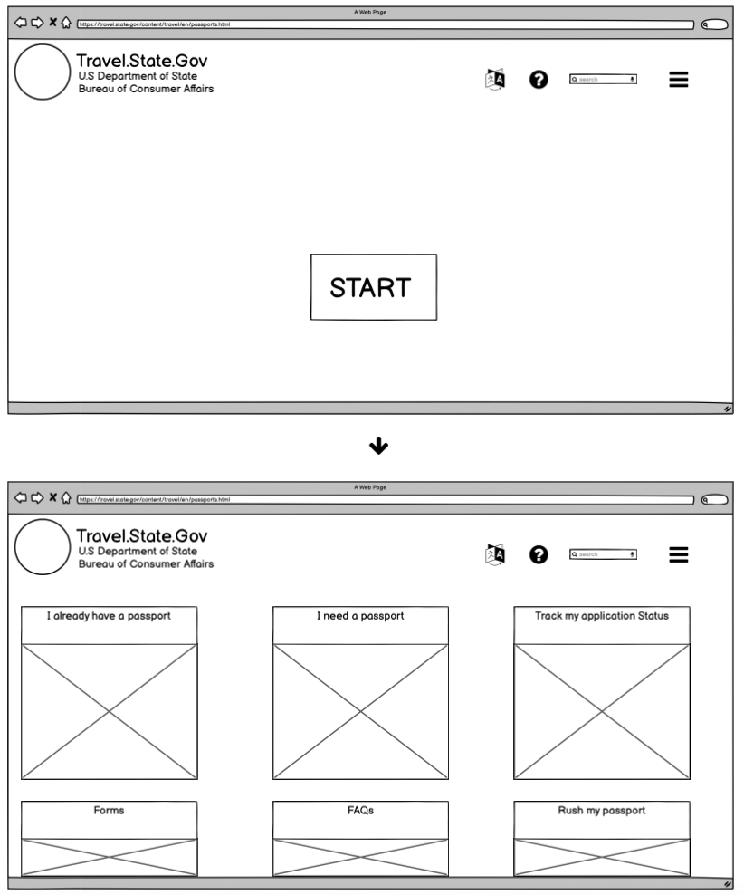
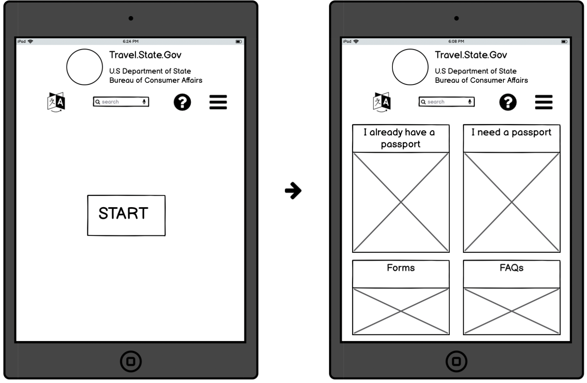
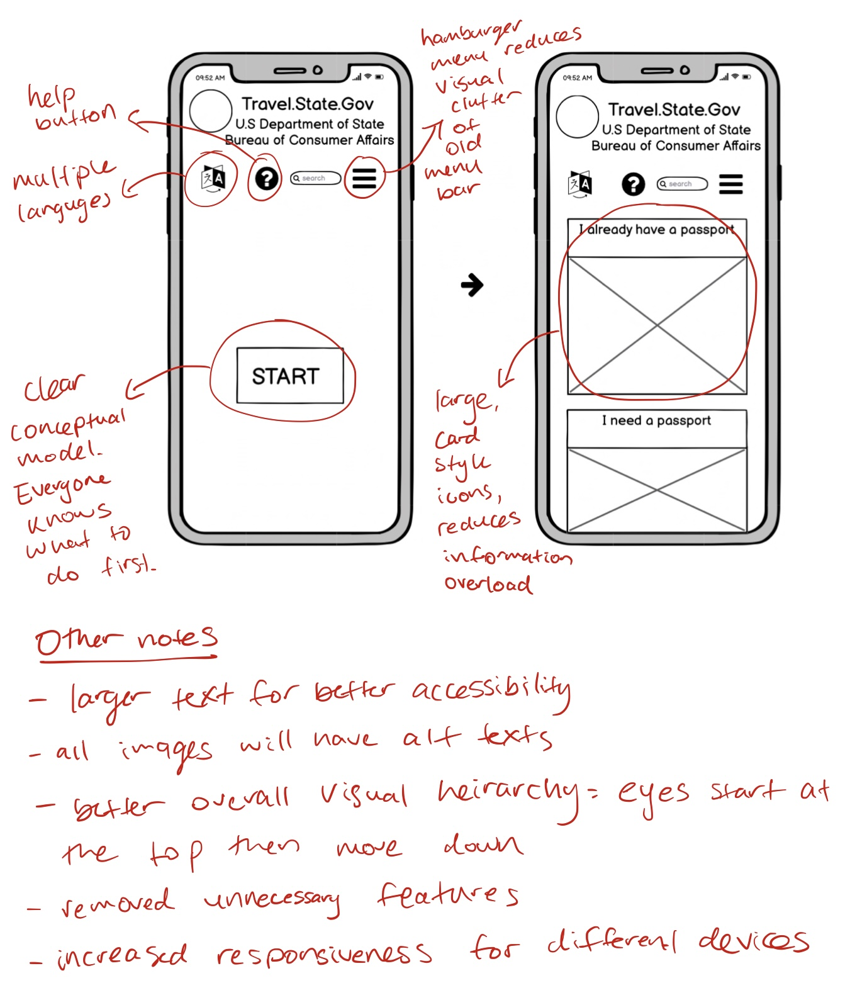
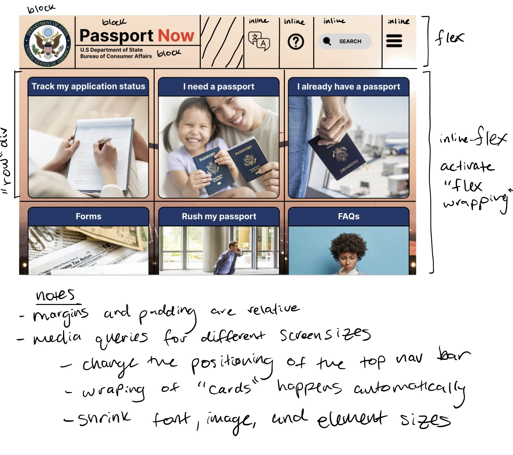
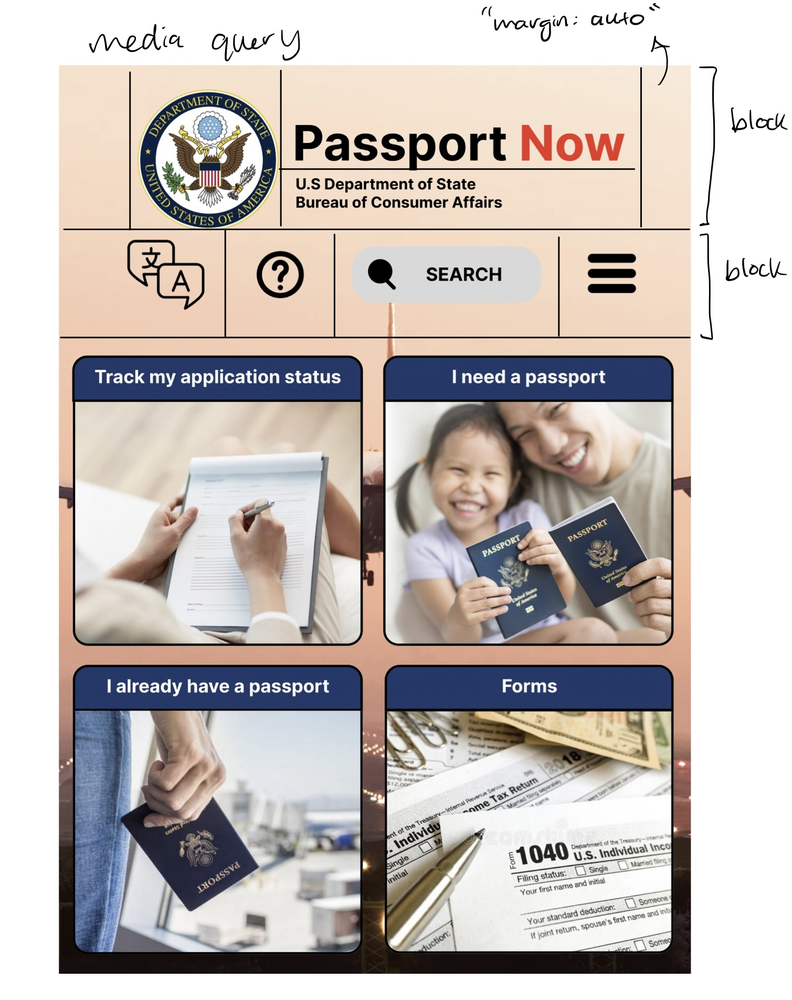

Prototyping
After identifying the issues with the page, I made low-fidelity prototypes and then high fidelty prototypes. I tried to address every major problem I had with the old website:
Below you will find my low-fidelity (made using Balsamiq) and high-fidelity (made using Figma) prototypes. I have annotated some of them to show how different improvements might be implemented
Low-fidelty Prototypes
  High-fidelty Prototypes


Final Product
Here is the link to the page: https://existentialelephant000.github.io/responsive-redesign/
Note: I did not implement the start button, but pretend like I did :)
Thank you for reading through my project. I hope one day the U.S government takes the time and effort to redesign their crucial web infastucture. As it stands, this website is in poor condition.